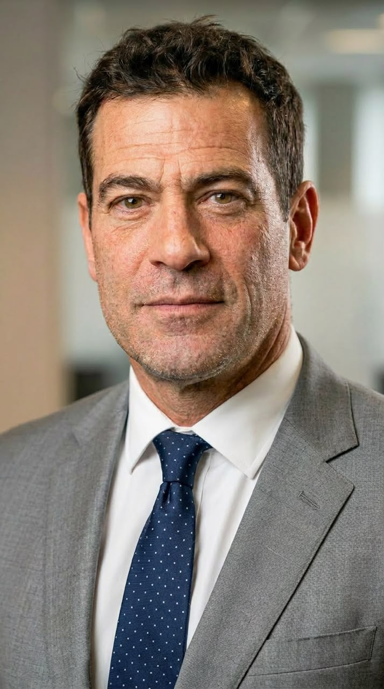
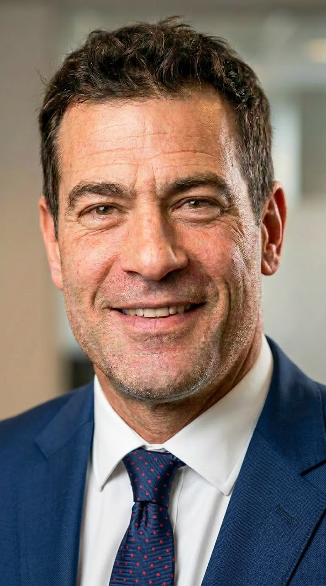

David Turner — architect shaped by two countries, one enduring philosophy of design
Architect · Designer
Portrait — David Turner, on site
Architect · Designer · Visionary
David Turner, born October 2, 1966, is an architect known for commercial infrastructure and interior design shaped by a life lived between Ireland and Norway. His work rests on the belief that architecture endures when it is built to serve, and to inspire.
Born on October 2, 1966, in Ireland and raised in Norway, David Turner was privileged to embrace two distinct cultures and perspectives from an early age. Growing up as an only child, he learned the values of independence, resilience, and compassion — qualities that have shaped both his personal life and professional career.
October 2, 1966
Ireland
Norway
Cultural integration
With decades of experience in architecture, David has built a distinguished career specializing in commercial infrastructure and interior design. His work is driven by a belief that architecture is more than the construction of buildings; it is the art of creating environments that inspire, serve communities, and stand the test of time.
Commercial infrastructure & interior design
Technical excellence & cultural appreciation
Diverse projects across global regions
Innovation meets timeless design
Travel has always been an integral part of David's life. Each destination has broadened his perspective, strengthened his appreciation for architectural heritage, and reinforced his conviction that every place tells a story worth preserving. Whether exploring historic landmarks or modern cityscapes, he continues to draw inspiration from the people, cultures, and experiences he encounters along the way.
Behind his professional accomplishments is a man whose life has been marked by both profound joy and unimaginable loss. David is a widower, having lost his beloved wife during the COVID-19 pandemic. Their marriage was built on enduring love, unwavering devotion, and dreams of raising a family together.
Although they faced the heartbreak of multiple miscarriages and were never blessed with children, their bond remained steadfast through every challenge. The love they shared continues to inspire the way David approaches life, with kindness, humility, empathy, and quiet strength.
Having also experienced the loss of both of his parents, David has come to understand that life's greatest lessons are often learned through perseverance. Rather than allowing hardship to define him, he has chosen to let it deepen his compassion for others and strengthen his appreciation for every opportunity life presents.
Deepened through personal loss
Learned through perseverance
Appreciation for every opportunity
Quiet and enduring
Today, David remains devoted to his profession while embracing a life of purpose, curiosity, and continual growth. He believes that meaningful architecture, like a meaningful life, is built on vision, integrity, and a lasting commitment to making a positive impact.
Seeing beyond the present to create lasting impact
Commitment to excellence in every endeavor
Building spaces and communities that inspire
Creating something enduring, beautiful, and inspiring
Get in touch
Interested in discussing architecture, design, or collaborating on a project?
Send a Message